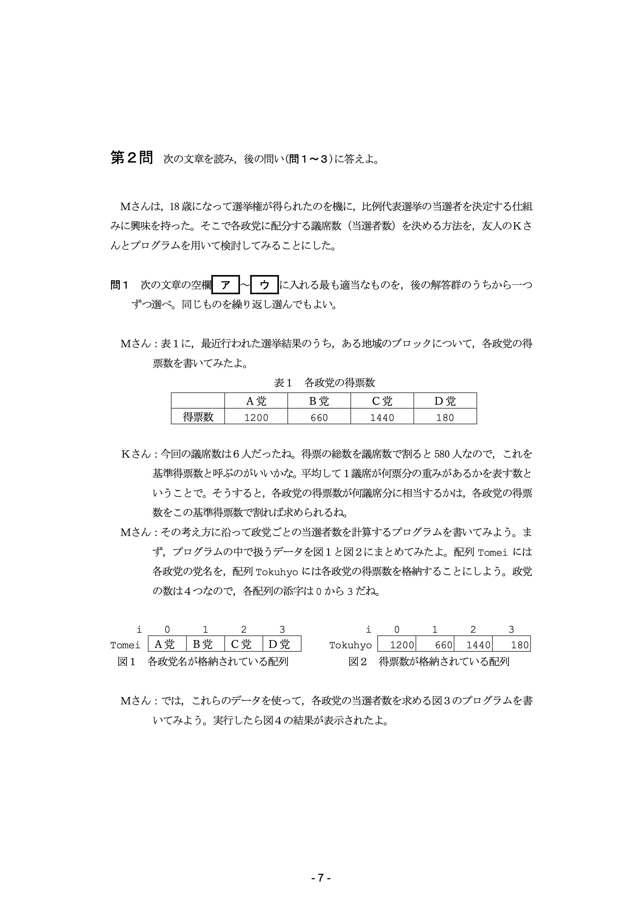
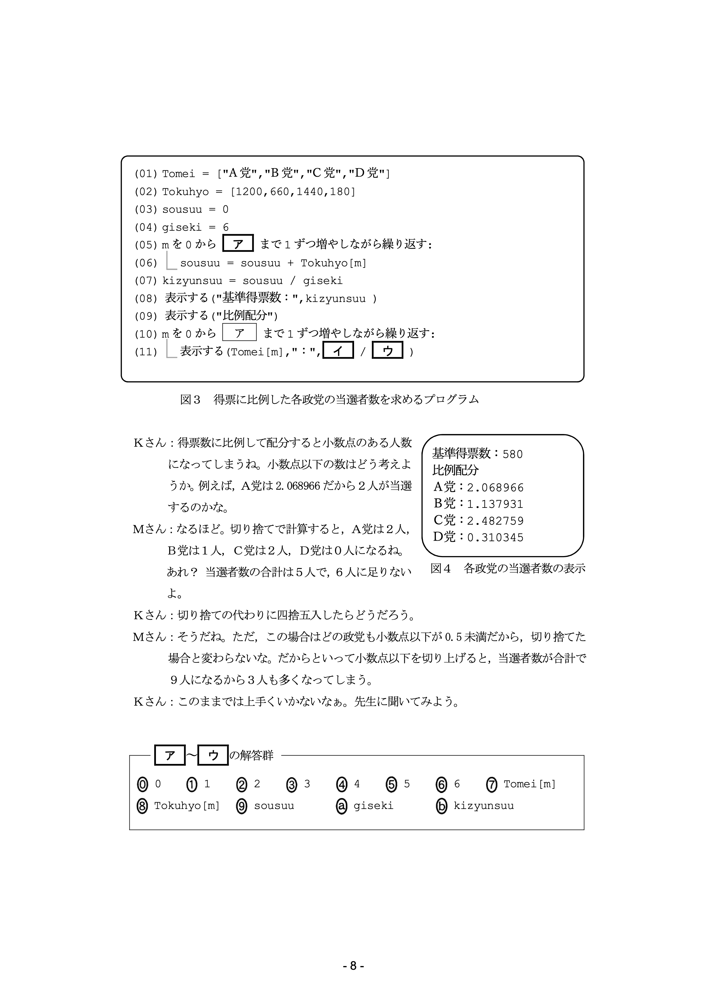

Assignment 2#
Note
ChatGPTとの対話によるリメディアル教育の例でが、ChatGPTによるPythonプログラミングのよい例にもなっています。
大学入試とAI#
「東ロボくん - Wikipedia」については別の機会に・・・
DNCLによる試験問題の記述#
%%ai vioras
DNCLについて
申し訳ありませんが、”DNCL”の具体的な文脈や意味をもう少し詳しく教えていただけますか？ これは略語で、さまざまな意味を持つ可能性があります。たとえば、「Do Not Call List（連絡禁止リスト）」や特定の技術やプロジェクトを指している場合もあります。もし具体的な文脈を教えていただければ、より具体的な情報を提供できます。
%%ai vioras
日本の大学入試で使われる疑似言語の略語です
ああ、そうですか。それならば、おそらく「データ記述言語 (Data Description Language)」の略で、日本の大学入試、特に情報科学やコンピュータ科学の試験でよく用いられる疑似コード言語を指している可能性が高いです。
DNCLは、情報を表現するためのシンプルな疑似言語で、データ構造の定義や操作を記述します。コードの実行結果を予測したり、アルゴリズムの理解を深めるためのツールとして使用されます。具体的なコードの書き方や実行環境は省かれ、データの構造や操作方法に焦点を当てることで、学習者がプログラミングの基本的な概念を理解しやすくなっています。
例えば、配列やリストの操作、ループ、条件分岐などの基本的なプログラムの構造を表現することができます。また、関数や手続きの定義と呼び出しも可能です。
ただし、DNCL自体は特定のプログラミング言語とは異なり、実際にコードを実行することはできません。あくまで概念理解やアルゴリズムの表現を目的とした教育用のツールです。
R7: 情報 サンプル問題 第２問#
問1#


次のChatGPTとの応答例を参考に上の問題に解答せよ#
%%ai vioras
日本の比例代表選挙の基準得票数について
日本の比例代表制度における基準得票数（ドント方式）は、各政党が獲得した投票数をその政党の候補者数で割った値を指します。この基準得票数は、選挙の結果を決定するための重要な要素であり、各政党が得た比例代表議席の数を決定します。
具体的な計算方法は次のようになります：
まず、各政党が獲得した投票数をその政党の候補者数で割ります。これが基準得票数です。
基準得票数が最も高い政党から順に、各政党に議席を割り当てます。ただし、その政党の候補者数が既に議席数に達している場合、その政党にはこれ以上議席は割り当てられません。
すべての議席が割り当てられるまで、このプロセスを繰り返します。
基準得票数が同じである場合、その政党の候補者が少ない方が議席を得ます。これは、候補者数が少ないほど、一人あたりの票数が多いという意味になるからです。
この方式はドント方式と呼ばれ、比例代表制度の公正性を保つために用いられます。
%%ai vioras
pythonでプログラムします。今回は組み込み関数だけ使います。
それは素晴らしいです。Pythonは非常に強力で使いやすい言語であり、組み込み関数を使うだけでも多くのことができます。
Pythonの組み込み関数には、len()やrange(), print(), type()などがあります。これらは特別なモジュールをインポートすることなく、直接使用できます。
例えば、以下はリストの長さを取得するためにlen()関数を使用した例です：
my_list = [1, 2, 3, 4, 5]
print(len(my_list)) # 出力は5
そして、以下はrange()関数を使用して一定の範囲を持つ整数の列を生成し、それをforループで繰り返す例です：
for i in range(5):
print(i) # 0から4までを順に出力
具体的なタスクや質問があれば、それに対するPythonのコードを提供することができます。どんなタスクを解決しようとしているのか、詳しく教えてください。
%%ai vioras
配列Tomeiに "A党", "B党", "C党", "D党" を格納します。Tomeiは不変です。
Pythonで不変の配列（タプルと呼ばれます）を作成するには、次のようにします：
Tomei = ("A党", "B党", "C党", "D党")
このコードは、”A党”, “B党”, “C党”, “D党”という4つの要素を持つタプルを作成し、それをTomeiという変数に格納します。タプルは一度作成するとその内容を変更することはできません（不変）。つまり、要素の追加や削除、変更ができません。
このTomei変数を使って何か特定の操作をしたい場合、その詳細を教えてください。それに応じて適切なPythonコードを提供します。
%%ai vioras
Tomeiの最初の要素、最後の要素の取り出し方を説明してください。また、任意の場所iの要素の取り出し方も教えてください。
Pythonのタプル（またはリスト）から要素を取り出すには、インデックスを使います。インデックスは0から始まります。つまり、最初の要素はインデックス0、2番目の要素はインデックス1、というようになります。
Tomeiの最初の要素を取り出すには以下のようにします：
first_element = Tomei[0]
print(first_element) # "A党" を出力
最後の要素を取り出すには、-1のインデックスを使います：
last_element = Tomei[-1]
print(last_element) # "D党" を出力
任意の場所iの要素を取り出すには、その位置のインデックスを使います。ただし、最初の位置は0です。例えば、3番目の要素を取り出すには以下のようにします：
i = 2 # 3番目の要素のインデックス (0から数える)
element_at_i = Tomei[i]
print(element_at_i) # "C党" を出力
これらのコードは、Tomeiという名前のタプルがすでに定義されていることを前提としています。
%%ai vioras
次に、配列Tokuhyoに 1200, 660, 1440, 180 を格納します。Tokuhyoも不変です。
Pythonで不変の配列（タプル）を作成するには、次のようにします：
Tokuhyo = (1200, 660, 1440, 180)
このコードは、1200, 660, 1440, 180という4つの要素を持つタプルを作成し、それをTokuhyoという変数に格納します。タプルは一度作成するとその内容を変更することはできません（不変）。つまり、要素の追加や削除、変更ができません。
ここで、TomeiとTokuhyoという2つのタプルが定義された状態です。これらを使って何か特定の操作をしたい場合、その詳細を教えてください。それに応じて適切なPythonコードを提供します。
%%ai vioras
変数sousuuを0で初期化し、Tokuhyoの総計を求めてsousuuに格納するプログラムを書いてください。
Pythonには組み込み関数のsum()があり、これを使ってタプル内のすべての要素の合計を簡単に計算することができます。以下に、それを使ってTokuhyoの総計を求め、その結果を変数sousuuに格納するプログラムを示します：
# 変数sousuuを0で初期化
sousuu = 0
# Tokuhyoの総計を求めてsousuuに格納
sousuu = sum(Tokuhyo)
print(sousuu) # 総計を出力
このプログラムは、Tokuhyoという名前のタプルがすでに定義されていることを前提としています。
%%ai vioras
変数sousuuを0で初期化し、Tokuhyoの総計を求めてsousuuに格納するプログラムを書いてください。
その際、for文を使ってループ変数を添字としてTokuhyoの各要素をアクセスしてください。
Pythonのforループとインデックスを使って、タプルTokuhyoの各要素を順にアクセスし、その総計を計算するプログラムは以下のようになります：
# 変数sousuuを0で初期化
sousuu = 0
# for文を使ってTokuhyoの各要素にアクセス
for i in range(len(Tokuhyo)):
sousuu += Tokuhyo[i] # 各要素をsousuuに加える
print(sousuu) # 総計を出力
このプログラムは、Tokuhyoという名前のタプルがすでに定義されていることを前提としています。また、range(len(Tokuhyo))はTokuhyoの長さ（つまり、要素数）だけ繰り返すための範囲を生成します。そして、sousuu += Tokuhyo[i]の行で、Tokuhyoの各要素をsousuuに加えています。
%%ai vioras
次に、変数gisekiを導入し6で初期化してください。gisekiは定数です。変数kizyunsuuにsousuuをgisekiで割った値を格納してください。
Pythonで定数と変数を定義し、計算結果を格納するには以下のようにします：
# gisekiを定数として6で初期化
giseki = 6
# kizyunsuuにsousuuをgisekiで割った値を格納
kizyunsuu = sousuu / giseki
print(kizyunsuu) # 結果を出力
このプログラムは、sousuuという名前の変数がすでに定義されていること（そしてその値が数値であること）を前提としています。また、Pythonでは定数という概念はありませんので、gisekiは変更しない変数として扱います。
以上のプログラムは、sousuuをgisekiで割った結果をkizyunsuuに格納し、その値を出力します。
%%ai vioras
最後に、Tokuhyoの各要素をkizyunsuuで割って、Tomeiの値をラベルにして表示してください。
Pythonのforループとzip()関数を使って、Tokuhyoの各要素をkizyunsuuで割り、それぞれに対応するTomeiのラベルと一緒に表示するプログラムは以下のようになります：
# Tokuhyoの各要素をkizyunsuuで割り、それぞれのTomeiのラベルとともに表示
for party, votes in zip(Tomei, Tokuhyo):
result = votes / kizyunsuu
print(f"{party}: {result}")
このプログラムは、Tomei、Tokuhyo、kizyunsuuという名前の変数がすでに定義されていることを前提としています。
zip()関数は、複数のイテラブル（ここではタプルTomeiとTokuhyo）から要素を順に取り出し、それらを組にして返します。forループと一緒に使うことで、Tomeiの各要素（政党名）とTokuhyoの各要素（得票数）を同時に取り出すことができます。そして、votes / kizyunsuuで各政党の得票数を基準得票数で割り、その結果を表示します。
%%ai vioras
組み込み関数`zip()`は使いません。
了解しました。zip()関数を使わずに、Tokuhyoの各要素をkizyunsuuで割り、それぞれに対応するTomeiのラベルと一緒に表示するプログラムは以下のようになります：
# Tokuhyoの各要素をkizyunsuuで割り、それぞれのTomeiのラベルとともに表示
for i in range(len(Tomei)):
result = Tokuhyo[i] / kizyunsuu
print(f"{Tomei[i]}: {result}")
このプログラムは、Tomei、Tokuhyo、kizyunsuuという名前の変数がすでに定義されていることを前提としています。
range(len(Tomei))はTomeiの長さ（つまり、要素数）だけ繰り返すための範囲を生成します。forループと一緒に使うことで、TomeiとTokuhyoの各要素にインデックスiを使って同時にアクセスします。そして、Tokuhyo[i] / kizyunsuuで各政党の得票数を基準得票数で割り、その結果を表示します。
%%ai vioras
定義した配列で実行してください。
了解しました。以下に、これまでの定義と説明を組み合わせて、全体のプログラムを示します：
# 配列TomeiとTokuhyoの定義
Tomei = ("A党", "B党", "C党", "D党")
Tokuhyo = (1200, 660, 1440, 180)
# 変数sousuuを0で初期化し、Tokuhyoの総計を求めてsousuuに格納
sousuu = 0
for i in range(len(Tokuhyo)):
sousuu += Tokuhyo[i] # 各要素をsousuuに加える
# 定数gisekiを6で初期化し、kizyunsuuにsousuuをgisekiで割った値を格納
giseki = 6
kizyunsuu = sousuu / giseki
# Tokuhyoの各要素をkizyunsuuで割り、それぞれのTomeiのラベルとともに表示
for i in range(len(Tomei)):
result = Tokuhyo[i] / kizyunsuu
print(f"{Tomei[i]}: {result}")
このプログラムを実行すると、Tomeiの各政党について、Tokuhyoの得票数を基準得票数で割った結果が出力されます。
# 配列TomeiとTokuhyoの定義
Tomei = ("A党", "B党", "C党", "D党")
Tokuhyo = (1200, 660, 1440, 180)
# 変数sousuuを0で初期化し、Tokuhyoの総計を求めてsousuuに格納
sousuu = 0
for i in range(len(Tokuhyo)):
sousuu += Tokuhyo[i] # 各要素をsousuuに加える
# 定数gisekiを6で初期化し、kizyunsuuにsousuuをgisekiで割った値を格納
giseki = 6
kizyunsuu = sousuu / giseki
# Tokuhyoの各要素をkizyunsuuで割り、それぞれのTomeiのラベルとともに表示
for i in range(len(Tomei)):
result = Tokuhyo[i] / kizyunsuu
print(f"{Tomei[i]}: {result}")
A党: 2.0689655172413794
B党: 1.1379310344827587
C党: 2.4827586206896552
D党: 0.3103448275862069